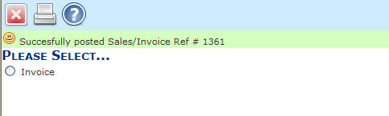
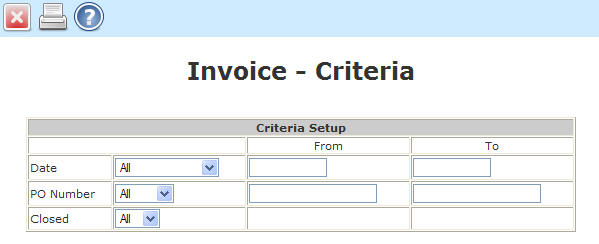

Revision History
Introduction
Passing Parameters to Forms
The report builder tool provides administrators with the ability to create, copy, edit, delete, import and export database driven reports and forms. Pre-defined reports are stored in the language directory labeled specified for the given language. After installing the plug-in, there may be several standard reports and forms installed. More reports or forms can be added by importing them from either the host servers reports directory or uploading them directly from the browser. Standard reports can be viewed and customized through the Report Viewer. Forms may only be edited through Report builder. The Report Viewer manual covers the output procedures necessary for exporting or viewing reports created with the report builder.
NOTE: DETAILED UNDERSTANDING OF THE DATABASES AND FIELDS IS REQUIRED TO USE REPORT BUILDER! FAILURE TO DO SO WILL RESULT IN ERRORS OR NON-FUNCTIONAL REPORTS AND FORMS.
Forms may be called directly from scripts by passing an id and criteria parameters. the parameters are assigned the variables cr[x] where [x] is replaced by the parameter to be assigned. Parameter 0 (zero) is reserved for the date field. Parameters 1-9 correspond to the order in which the criteria are ordered in the form. An example href tag might look like:
<a href="reportwriter/FormMaker.php?id=prch:po&cr0=a&cr1=Range:3:3">
Variable 'id': The id definitions correspond to the index value of the variable $FormGroups in the file /reportwriter/admin/defaults.php. the current definition codes are:
gl:chk = Bank Checks
ar:col = Collection Letters
ar:cust = Customer Statements
gl:deps = Bank Deposit Slips
ar:inv = Invoices/Packing Slips
ar:lblc = Customer Labels
prch:lblv = Vendor Labels
prch:po = Purchase Orders
ord:quot = Customer Quotes
ar:rcpt = Sales Records
ord:so = Sales Orders
misc:misc = Miscellaneous
Variable cr0: The possible values for cr0 are the letters a-k as defined below (also found as the indexes of the variable $DateChoices in the file /reportwriter/admin/defaults.php):
a = All
b = Range
c => Today
d => This Week
e => This Week to Date
f => This Month
g => This Month to Date
h => This Quarter
i => This Quarter to Date
j => This Year
k => This Year to Date
Variable cr1 through cr9: Variables cr1-cr9 need to correspond to the sequence of the field as specified in the form criteria. There are three parts to the value passed. The first is the text label which must match exactly to a label from the criteria dropdown list for the associated field. The second and third are the >From and To values for label of the criteria if they require them (such as the labels Range and Equal To). The three values are separated by semi-colons. If the second or third parameter is not required, it may be left out (such as in the case Yes, No, Printed, Unprinted, etc.).
From our example above:
<a href="reportwriter/FormMaker.php?id=prch:po&cr0=a&cr1=Range:3:3">
The form group for Purchase Orders will appear (listing all variations of the PO forms) as shown below:

The user must select which variation of the form he needs and can either Generate the PDF, alter the Criteria, or Cancel and return to the index.php script. The hidden parameters cr0=a will default to the All date range (date independent) and cr1=Range:3:3 would default the first field listed in the criteria listing setting the To and From value to 3. If the first criteria field is the PO Number, report writer will generate just a single PO form with the PO number equal to 3. If the user wishes to alter the criteria by pressing Criteria Setup, The default parameters will be filled in automatically but may be changed if the user desires.
